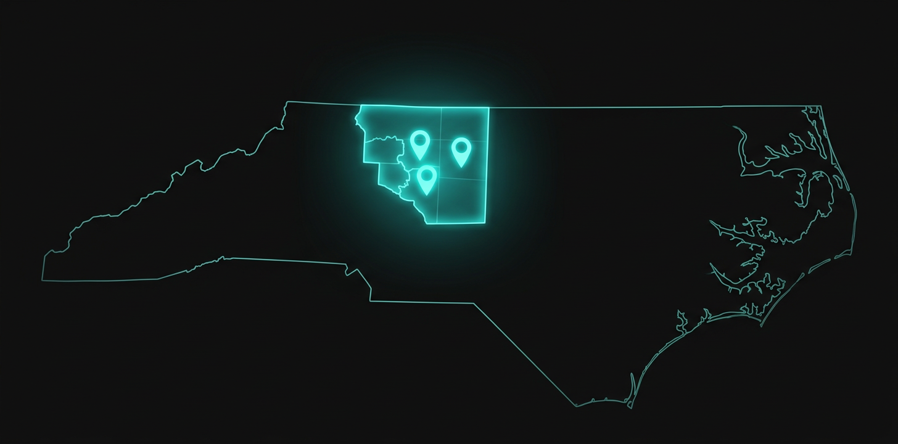

Based in High Point, NC. Building AI and automation systems for service businesses across Greensboro, Winston-Salem, Raleigh, Durham, Charlotte, and every city in between.
From our High Point headquarters, we serve businesses across the Tar Heel State and beyond.

Our home base. CRM systems, AI agents, and workflow automation for local service businesses. In-person meetings available anytime.
HVAC, legal, and insurance automation for Greensboro's growing service sector. We've built systems for contractors, firms, and agencies across the Gate City.
Learn more →Healthcare, coaching, and real estate systems for Winston-Salem businesses. From solo practitioners to multi-location operations.
Learn more →Tech-forward AI solutions for Triangle startups and scaling companies. Custom AI agents, API integrations, and intelligent workflows.
Learn more →Enterprise-grade automation for Charlotte's largest metro service businesses. CRM, AI voice agents, and full operational systems.
Remote-first delivery. We've built systems for clients in 15+ states. Same quality, same attention -- no matter where you are.
When your automation partner is in the same timezone -- in the same state -- things move faster. We understand NC's business landscape because we're part of it.
We know the Triad's service industry. We've worked with Greensboro contractors, Winston-Salem coaches, and High Point agencies. We show up to in-person meetings when you need face time, not just Zoom calls.
But local doesn't mean limited. Our systems are built to work anywhere. We serve businesses nationwide with the same level of attention -- just with NC businesses getting priority scheduling and our Local First pricing.
Same-day response for Triad-area businesses
In-person meetings available for High Point, Greensboro, and Winston-Salem clients
Local First pricing for NC-based service businesses
NC market expertise -- we know the industries, the competition, and the opportunities
"The audit alone was worth more than what most agencies charge for a full project. Rock identified bottlenecks we didn't even know we had."-- Monty, Move Makers Consulting North Carolina
"He identified issues we didn't even know we had. Our follow-up process went from manual chaos to completely automated in two weeks."-- Emily, Business Owner / Nutritionist Greensboro Area
"Fast, thorough, and zero pressure. The systems they built are still running perfectly months later."-- Mariah, BetterWealth Remote Client
Every service we offer is available to NC businesses with priority scheduling and local support.
No. We serve clients nationwide. But NC businesses get priority scheduling and our Local First pricing. If you're in High Point, Greensboro, Winston-Salem, or anywhere in the Triad, we can meet in person too.
Yes, for Triad-area clients. We're based in High Point at 3980 Premier Dr and happy to meet face-to-face. Most of our work is done remotely for efficiency, but we're always available for local sit-downs.
HVAC and home services, law firms, insurance agencies, real estate, coaching, healthcare, and any service business that relies on appointments and follow-ups. See our full industries page for details.
We don't just build websites. We build operational systems -- CRM, AI agents, voice bots, and workflow automation that actually run your business. Plus, every project includes a 30-day testing period and full documentation.
A 45-minute deep dive into your operations. We evaluate your lead generation, sales pipeline, marketing, operations, client experience, and tech stack. You walk away with a recorded strategy session and a custom automation roadmap -- even if you never hire us. Learn more about the audit.
Whether you're in the Triad, Triangle, Charlotte, or anywhere else -- your systems audit starts here.